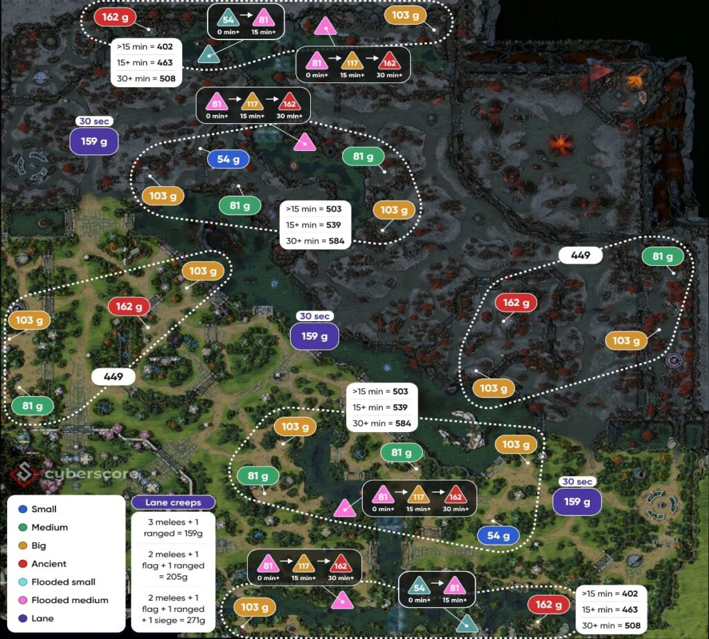

Что значит фармить
Фарм — это получение золота и опыта. Их дают крипы, нейтральные лагеря и некоторые другие действия на карте. На золото герой покупает предметы, которые помогают ему в игре.
Старайся добивать крипов
Когда у крипа мало здоровья, нанеси последний удар. Так ты получишь золото. Не атакуй волну без остановки: иногда удобнее подождать и добить крипа в нужный момент.
Не стой без дела
Если на линии сейчас нет безопасного фарма, посмотри, можно ли забрать соседнюю волну или лагерь нейтральных крипов. Выбирай путь так, чтобы не заходить в опасную часть карты одному.
Следи за картой
Поглядывай на мини-карту. Если врагов не видно, они могут быть рядом. В такой ситуации лучше фармить ближе к союзникам или под защитой своей команды.

Фарм зависит от роли
Керри обычно старается получить больше ресурсов. Поддержки чаще оставляют крипов союзникам и помогают обзором, защитой и полезными предметами. Но если команда отстаёт, любой безопасный дополнительный фарм может пригодиться.